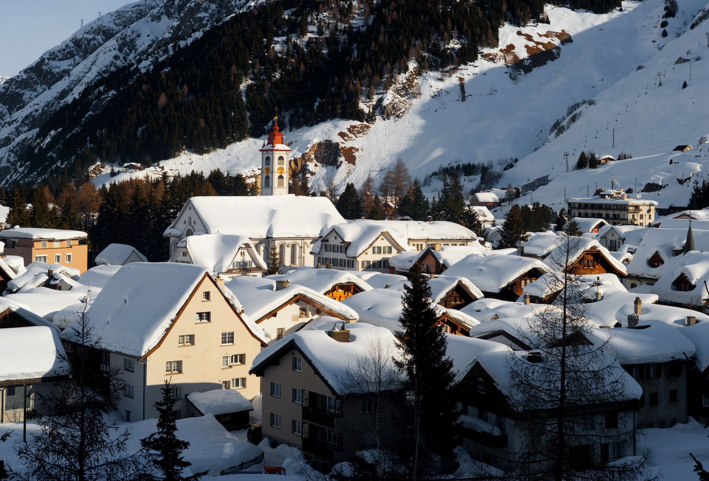
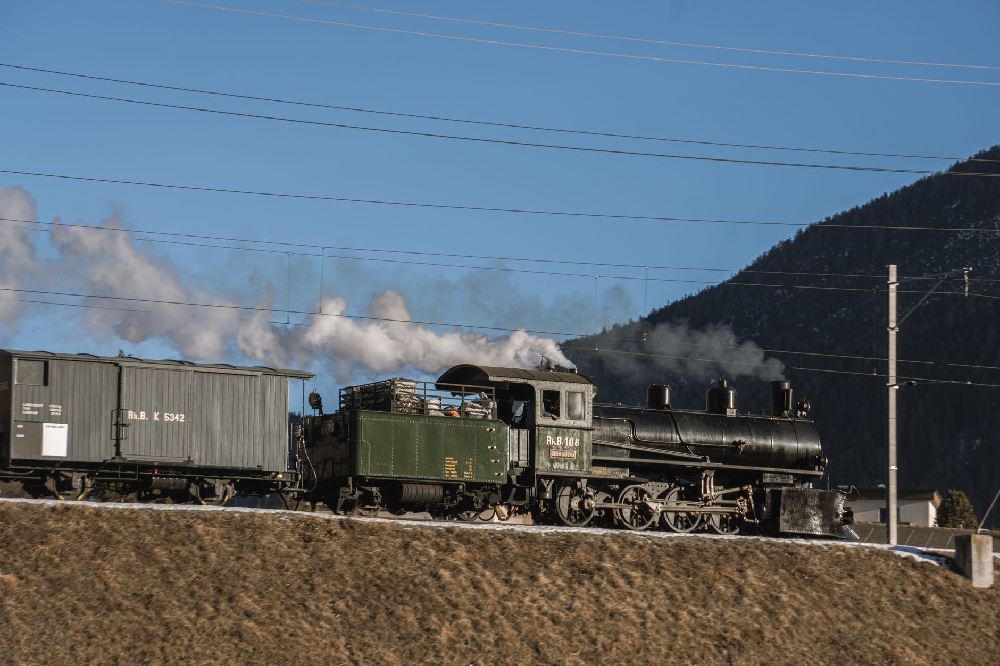
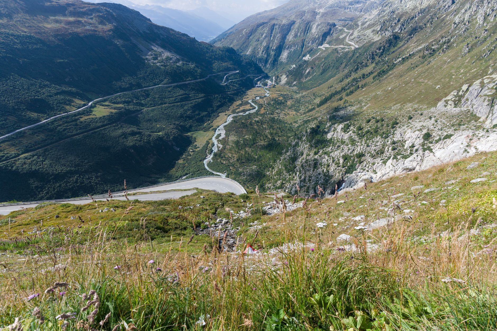
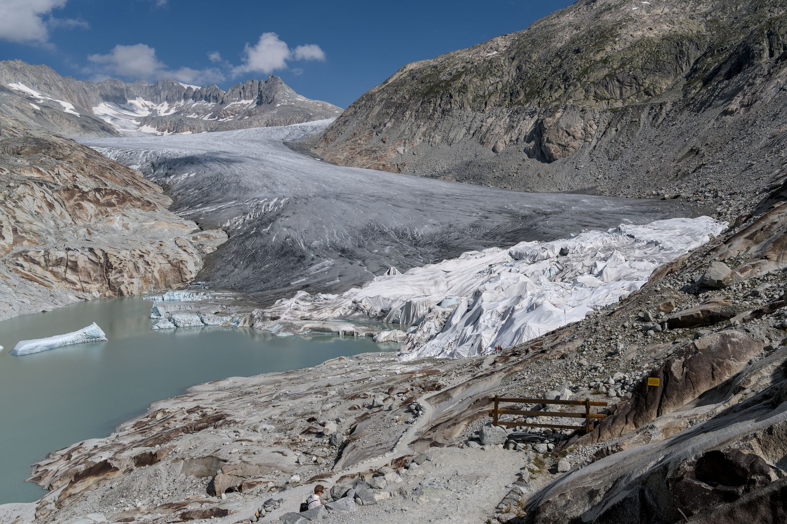

Photo: Till Mohr / Pexels
Furka Pass climbs to 2,429 metres between Andermatt and Gletsch, and it's a genuine piece of film history: the car chase in Goldfinger (1964) was shot on this road. It runs alongside the Furka Cogwheel Steam Railway, a heritage line still running steam locomotives more than a century old.
This route covers Andermatt, Realp, the pass itself, and Gletsch at the foot of the Rhone Glacier on the far side.
-

AndermattA road and rail hub in the middle of the Swiss Alps, the base before the climb. -

RealpThe eastern terminus of the Furka Cogwheel Steam Railway, running steam locomotives over 100 years old. -

Furka Pass2,429 m, the pass where the car chase in Goldfinger (1964) was filmed. -

GletschAt the foot of the Rhone Glacier, which the road and railway both curve around.
Stop photos: tommy picone, Oskar Gross, Jean-Paul Wettstein, Jean-Paul Wettstein / Pexels
The steam railway runs only from June to October, the same rough window the pass road itself is reliably open. Outside that season, both close for winter.
Good to know before you drive it
- Furka Pass is a seasonal road, generally open June through October depending on snow. It closes completely in winter, with no year-round alternative over this exact route.
- Switzerland requires a vignette (toll sticker) for its motorways, sold at the border or online, valid for a calendar year. This particular pass road isn't a motorway, but you'll likely cross one to reach it.
- The road is narrow with limited passing space on the switchbacks, and shares the valley floor with the cogwheel railway in places. Watch for both cars and trains at the same crossings.
- 31 km is short, but a stop at the glacier and the pass viewpoint make this an easy half day, not a rushed hour.
Ready to book this drive? This route runs 31 km and about 0.5 hours behind the wheel, entirely inside Auto Europe's coverage area.
We book through Auto Europe. It compares Hertz, Sixt and the other major agencies in one search, with cross-border and one-way terms visible before checkout instead of buried in each company's own fine print.
Compare car rental prices →This is an affiliate link. Booking through it may earn Travel Gap a commission at no extra cost to you.
Read the full Europe road trip planning guide for what to check before you book anywhere on the continent.